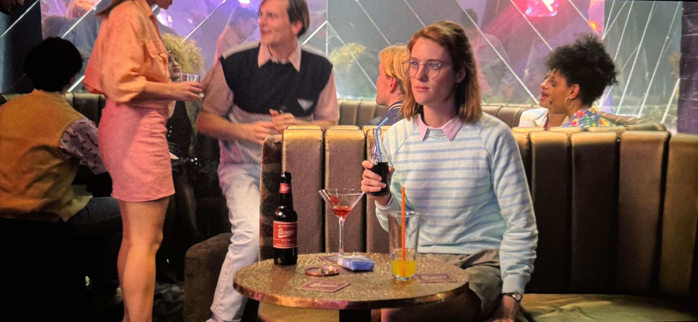
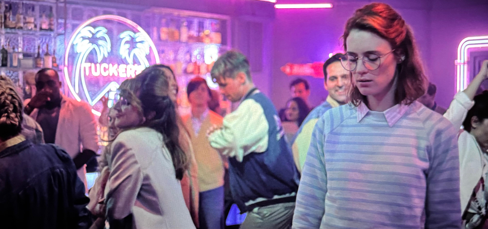
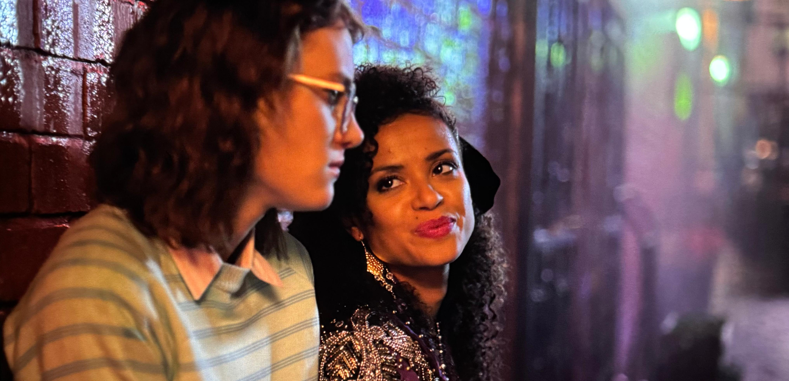
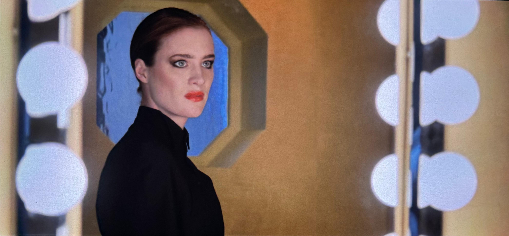
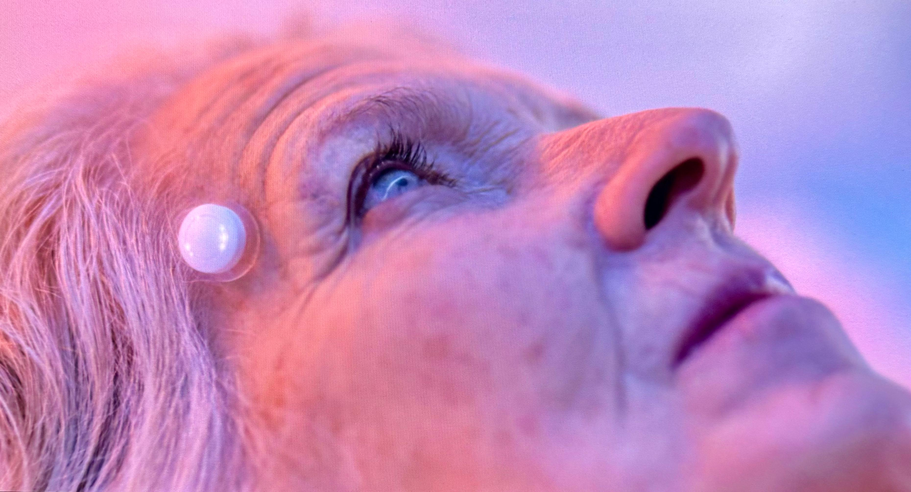
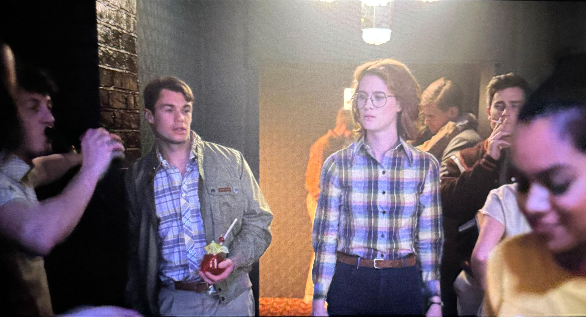
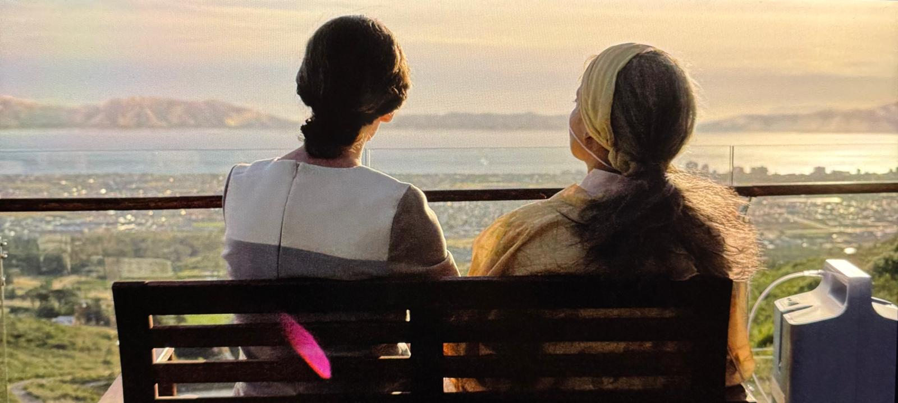

Introduction
Virtual and augmented reality technologies have advanced significantly in recent years, with contemporary devices offering increasingly immersive forms of digital interaction. Science fiction, however, often imagines forms of VR and AR that extend far beyond current technical limitations. One of the most compelling portrayals of advanced virtual reality appears in the Black Mirror episode San Junipero. The episode presents a fully immersive, brain-integrated virtual environment that functions as a digital afterlife. By examining how this system operates, how users interact with it, and its broader societal implications, this analysis explores both the promise and the danger of future VR technologies.
Description of the VR Experience
In San Junipero, virtual reality is presented as a complete simulation of reality that users enter through a neural interface. Unlike contemporary VR systems that depend on headsets, controllers, or external displays, this system directly connects to the human brain and produces an experience that feels identical to physical life. Users are able to see, hear, touch, move, and emotionally engage with the environment as though they are truly present within it.
The virtual world itself takes the form of a nostalgic coastal town, with selectable decades such as the 1980s and 1990s shaping the setting and atmosphere. This design makes the environment socially vibrant and emotionally appealing, reinforcing the idea that the world is not simply a simulation for entertainment, but a place where people can live meaningful experiences.
Initiation and Termination of the Experience
The experience is initiated through a neural upload process. Elderly or terminally ill users connect to the system periodically, allowing them to temporarily visit San Junipero for limited periods of time. The episode also explains that after biological death, users may choose to permanently upload their consciousness into the system. In this sense, the platform functions not only as a VR experience, but also as a form of digital continuation after death.
Termination occurs either when a temporary session ends and the user disconnects, or when a user chooses to permanently pass on rather than remain in the digital environment. This creates a powerful tension between real-world mortality and virtual persistence.
Classification: VR, AR, or MR?
The technology in San Junipero is best classified as full virtual reality. It does not overlay content onto the physical world, so it is not augmented reality. It also does not blend real and virtual objects in a shared space, so it is not mixed reality. Instead, it completely replaces the user’s sensory experience with a fully synthetic environment. The immersion is therefore much deeper than any commercially available system today.
How the Experience Is Enabled
The show implies the existence of several advanced technologies that make San Junipero possible, including high-resolution brain-computer interfaces, complete neural mapping, consciousness preservation, and large-scale computational infrastructure capable of sustaining shared persistent simulations. While early-stage brain-computer interface research exists today, the ability to digitize and preserve a human consciousness remains speculative and far beyond current scientific reality.
User Perception
Users perceive San Junipero through what appears to be total sensory immersion. The visuals are lifelike and detailed, the auditory environment is natural and socially rich, and tactile perception appears fully simulated. Beyond these senses, the show also suggests that emotional experience remains intact, allowing users to form relationships, feel joy, and make deeply personal decisions within the virtual world. This makes the environment more than a visual simulation; it is effectively a complete substitute for embodied life.
Interaction Design
Interaction in San Junipero is natural and seamless. Users do not operate through visible menus, controllers, or interface panels. Instead, they move, speak, socialize, and make choices as they would in real life. This absence of interface friction is one of the most striking aspects of the design. The system does not feel like software being operated from the outside; it feels like reality being inhabited from within.
This interaction model is especially effective because it removes barriers that often make present-day VR feel artificial. Rather than teaching users a new interface language, the system relies on familiar human action and social behavior.
Purpose and Goal of the Experience
The purpose of San Junipero extends far beyond entertainment. It offers aging and terminally ill individuals a space for freedom, connection, and escape from bodily limitation. At its most profound level, it functions as a digital afterlife, giving users the possibility of continuing to exist after physical death. In doing so, the system addresses deep human concerns such as loneliness, mortality, identity, and the desire for meaningful connection.
Impact on Future Society
The social implications of this technology are enormous. On the positive side, San Junipero reduces fear of death, allows loved ones to remain together, and offers comfort to those facing physical decline. On the negative side, it raises profound ethical questions about consciousness, personal identity, consent, and what it means to remain alive in a digital medium. The technology would likely reshape social, political, and even religious understandings of death and personhood.
The episode frames this impact as a mixture of hope and unease. It is emotionally uplifting in some respects, but it also suggests that such technology could blur the line between liberation and dependence.
Interaction Sequence Walkthrough
A typical interaction sequence begins when a user connects to the system through a neural interface. The user then appears instantly inside the San Junipero environment, where they can navigate freely, encounter others, and form relationships. Over time, they learn the rules of the space, including the fact that it is not simply a leisure simulation but an environment tied to the question of permanent digital existence. Eventually, the user must decide whether to continue visiting temporarily or remain there permanently.
Critique of the VR Experience
As a fictional technology, San Junipero is both compelling and problematic. Its greatest strength is the meaningful problem it attempts to address: the fear of death and the limitations of the aging body. It is an emotionally powerful and highly impactful use of VR because it is centered on a genuine human need rather than novelty alone.
At the same time, the system is not currently plausible in its full form. While some foundational ideas, such as brain-computer interfaces, are under active development, the complete transfer or preservation of human consciousness is not scientifically achievable today. The interaction design is excellent within the fiction, but its real-world implementation would involve immense technical and ethical obstacles.
Screenshot Walkthrough







Conclusion
San Junipero presents one of the most thought-provoking visions of virtual reality in science fiction. By imagining VR as a digital afterlife rather than merely a tool for entertainment, the episode expands the conversation around immersion, identity, ethics, and social transformation. Although the technology remains largely implausible today, its conceptual power makes it an effective and memorable example of how science fiction can challenge us to rethink the future of VR.